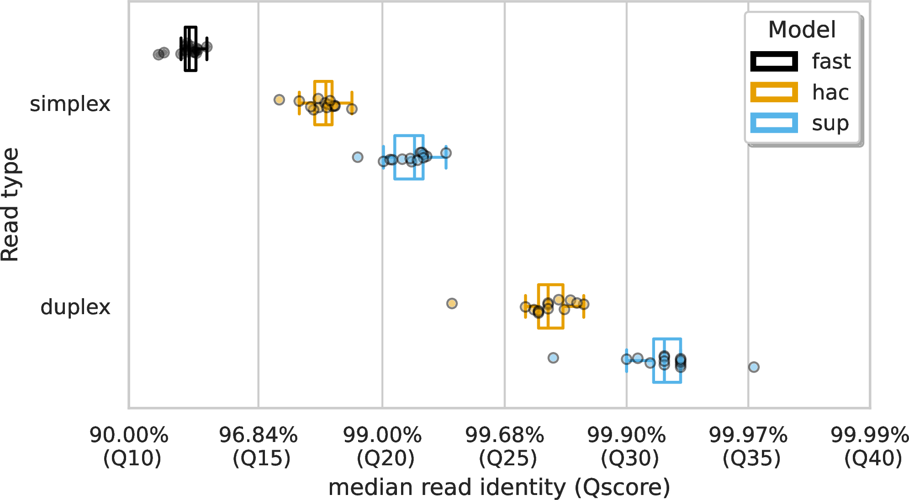
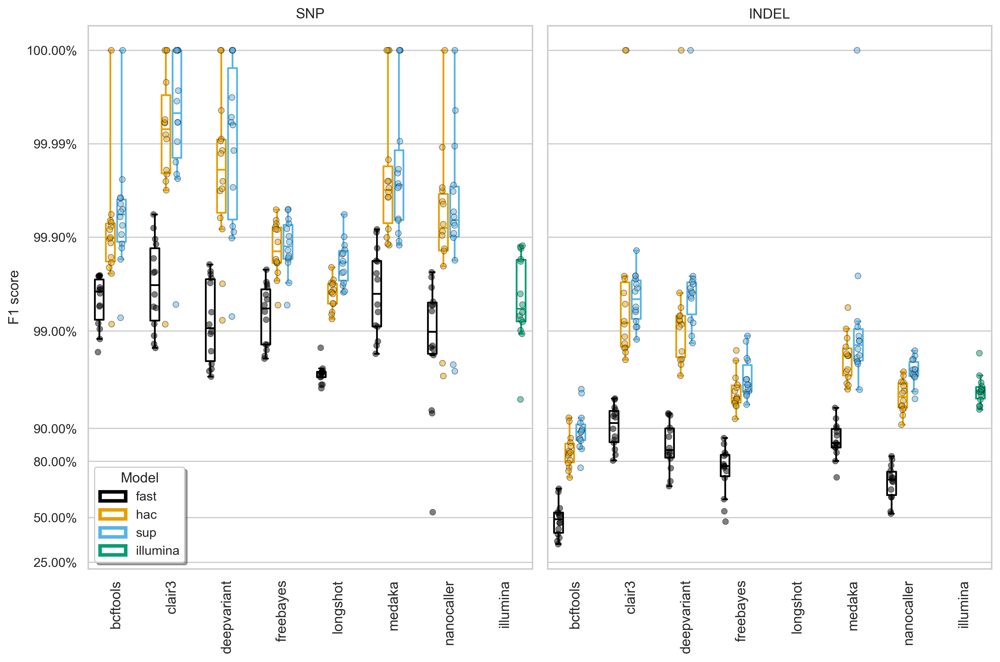
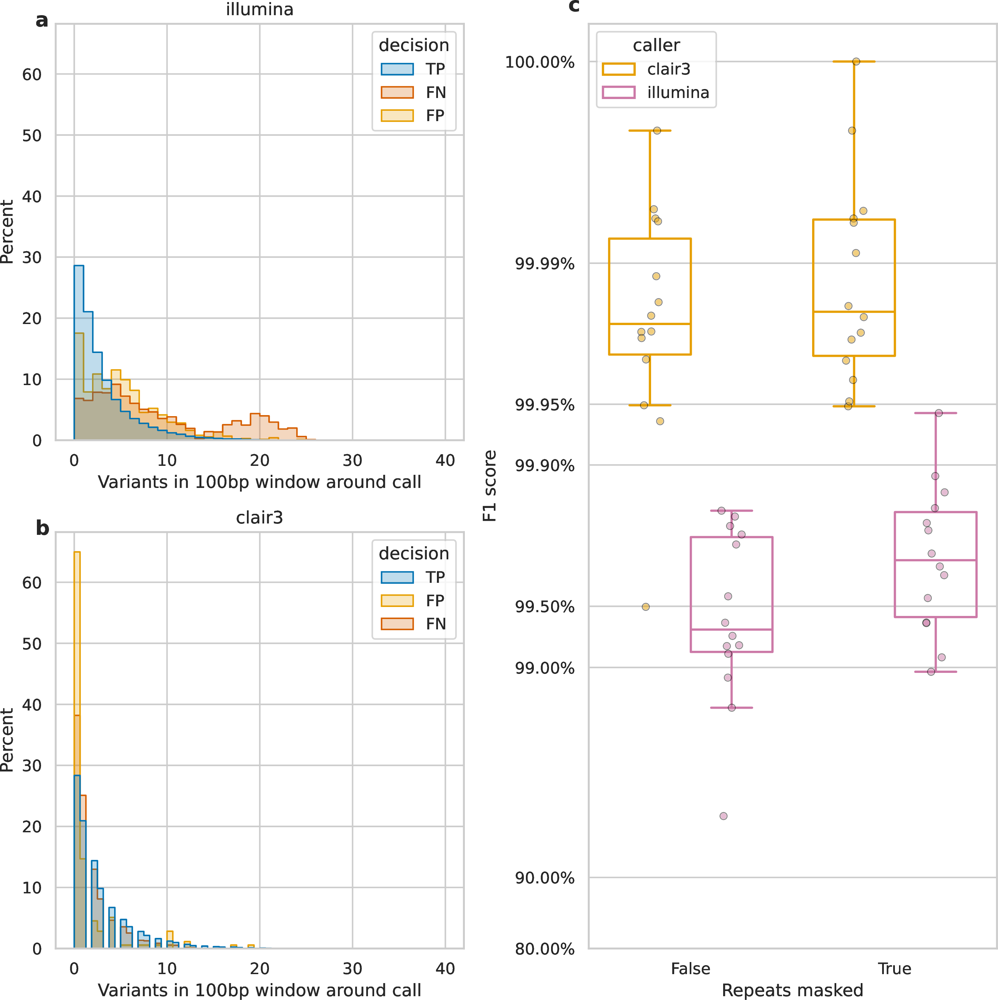
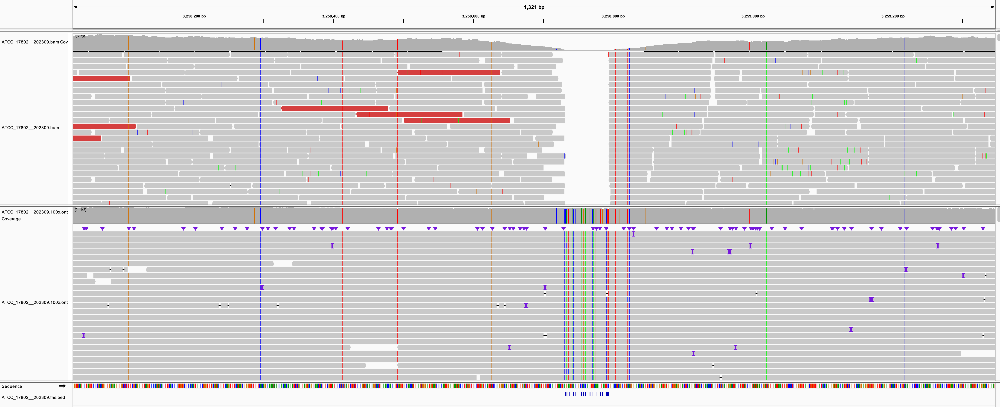
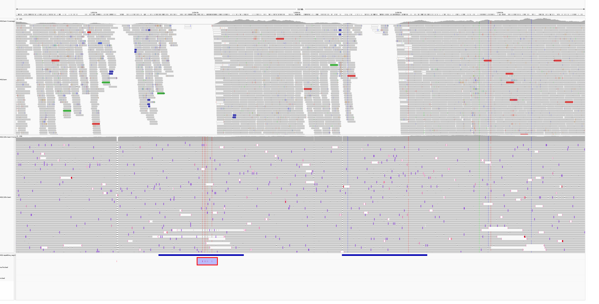
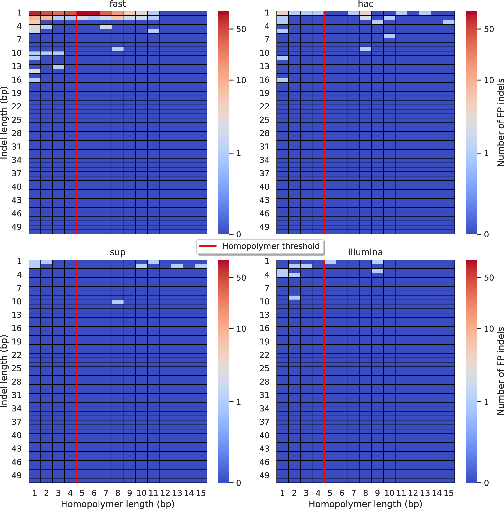
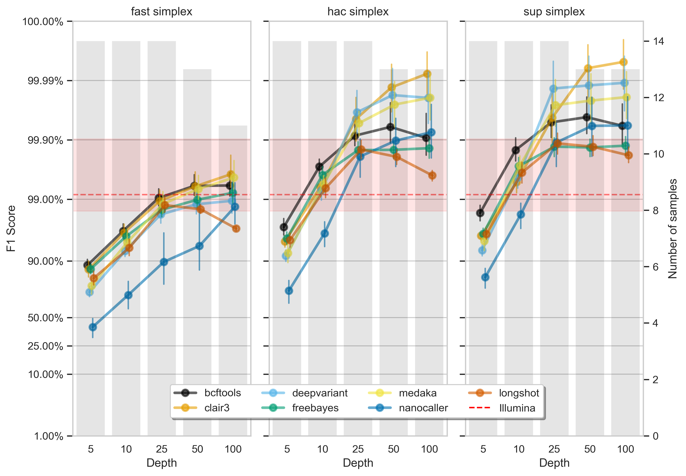
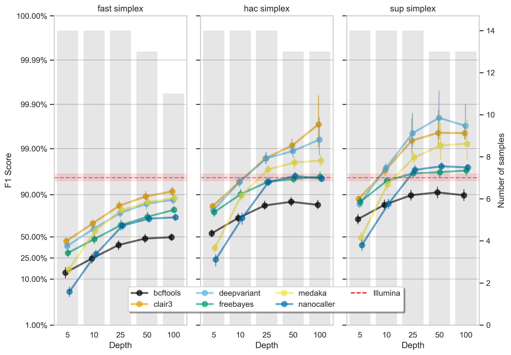
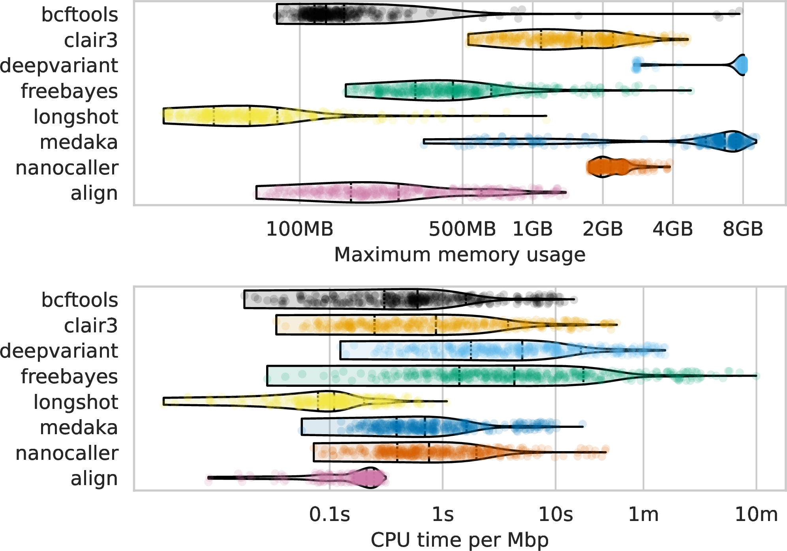

Evaluating Nanopore-based bacterial variant calling
Michael Hall
Postdoc | Coin Lab @ the Doherty Institute
Background
- Long-read sequencing technologies are revolutionising genomics
- Variant calling is fundamental to so many bacterial genomics applications
- Deep learning models have been developed to improve variant calling
- But how do they compare to traditional methods in bacteria?
Data
- 14 bacterial species
- Campylobacter jejuni
- Campylobacter lari
- Escherichia coli
- Klebsiella pneumoniae
- Klebsiella variicola
- Listeria monocytogenes
- Listeria ivanovii
- Listeria welshimeri
- Mycobacterium tuberculosis
- Salmonella enterica
- Staphylococcus aureus
- Strepococcus pyogenes
- Strepococcus dysgalactiae
- Vibrio parahaemolyticus
- ONT R10.4.1 @ 5kHz sampling rate
- Simplex and duplex
- fast, hac, and sup
- Perfect assemblies
Read-level accuracy
Create variant truthset
- Select variant donor
- Find differences between reference and donor
- Apply differences to reference
Variant calling
- BCFtools
- Clair3
- DeepVariant
- FreeBayes
- Longshot
- Medaka
- NanoCaller
deep learning models
Best F1 Score
Illumina missed calls
Dense variation pileup
Repetitive region pileup
ONT homopolymers

How low can you go? (SNPs)
How low can you go? (indels)
Resource usage
Resource usage - basecalling

Conclusions
- Use sup model
- ONT read-level accuracy >Q20
- Use Clair3 - better than Illumina
- Homopolymer-induced errors nearly gone
- You can go surprisingly low with depth (10x if feeling brave, 25x otherwise)
Acknowledgements
- Ryan Wick
- Louise Judd
- An Nguyen
- Ouli Xie
- Mark Davies
- Eike Steinig
- Torsten Seemann
- Tim Stinear
- Lachlan Coin
Questions?
DOI: 10.7554/eLife.98300.1